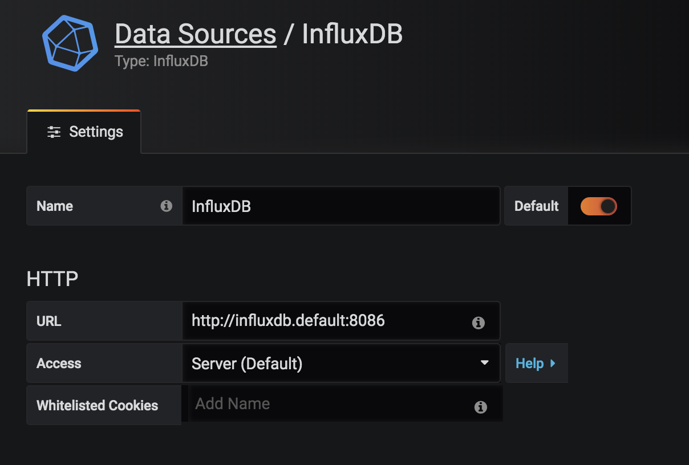
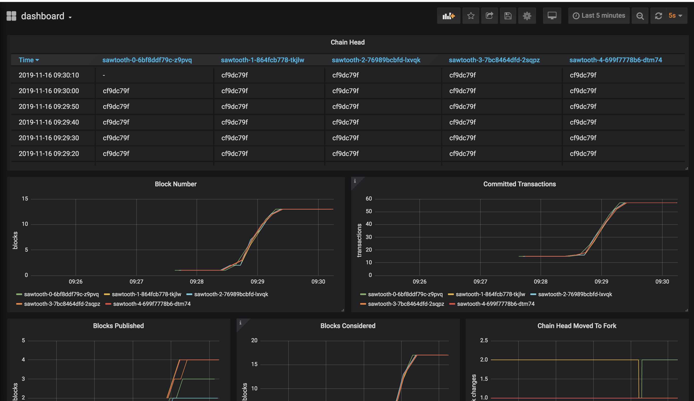

I need to agree with Prometheus vision, instrument everything. Every library, subsystem and service should have at least a few metrics to give you a rough idea of how it is performing.
It's easier with instrumentation to get a snapshot of your system state in a particular time, the one can discovery outliers and misbehaviors and if you need more details you always have debugging logs.
Saying that, in this post we will analyze how to monitor a Sawtooth Validator Node, using InfluxDB and Grafana.
As usual we start with the KIND cluster, if you don't have this yet check it out, apply the RBAC for tiller and install it after:
$ cat <<EOF | kubectl apply -f -
apiVersion: v1
kind: ServiceAccount
metadata:
name: tiller
namespace: kube-system
---
apiVersion: rbac.authorization.k8s.io/v1beta1
kind: ClusterRoleBinding
metadata:
name: tiller
roleRef:
apiGroup: rbac.authorization.k8s.io
kind: ClusterRole
name: cluster-admin
subjects:
- kind: ServiceAccount
name: tiller
namespace: kube-system
EOFInstalling HELM, InfluxDB and Grafana
$ helm init --service-account tiller
$ helm install stable/influxdb --name influxdb
$ helm install stable/grafana --name grafanaFirst we need the get the DNS address and available ports for each service, you can use:
$ kubectl get svc
grafana ClusterIP 10.102.250.186 <none> 80/TCP 9m34s
influxdb ClusterIP 10.101.193.193 <none> 8086/TCP,8088/TCP 9m15s
Host summary:
grafana - grafana.default.svc
influxdb - influxdb.default.svcTo test locally lets expose both ports in our client machine:
INFLUXDB_HOST=$(kubectl get pods --namespace default -l app=influxdb -o jsonpath="{ .items[0].metadata.name }")
GRAFANA_HOST=$(kubectl get pods --namespace default -l "app=grafana,release=grafana" -o jsonpath="{.items[0].metadata.name}")
kubectl port-forward --namespace default $GRAFANA_HOST 3000
kubectl port-forward --namespace default $INFLUXDB_HOST 8086:8086To create a new database in InfluxDB use:
> / # influx -precision rfc3339
Connected to http://localhost:8086 version 1.7.3
InfluxDB shell version: 1.7.3
Enter an InfluxQL query
> CREATE DATABASE db1Go to http://localhost:3000, you can find your password on "helm status grafana" instructions. Lets add the InfluxDB database in the dashboard.

Now, you need to import the dashboard from:
https://raw.githubusercontent.com/hyperledger/sawtooth-core/master/docker/grafana/dashboards/dashboard.jsonDownload the Sawtooth 1.1 - Kubernetes, find the ALL the validators lines in the YAML description (container name: sawtooth-validator) and enable code instrumentation via arguments, the off-site configuration for configuration monitoring can be made on /etc/sawtooth/validator.toml as well.
$ wget https://sawtooth.hyperledger.org/docs/core/releases/1.1/app_developers_guide/sawtooth-kubernetes-default-poet.yaml
vi sawtooth-kubernetes-default-poet.yaml
...
sawtooth-validator -vv \
--opentsdb-url http://influxdb.default:8086 \
--opentsdb-db db1 \
--endpoint tcp://$SAWTOOTH_0_SERVICE_HOST:8800 \
--bind component:tcp://eth0:4004 \
...
sawtooth-validator -vv \
--opentsdb-url http://influxdb.default:8086 \
--opentsdb-db db1 \
--endpoint tcp://$SAWTOOTH_1_SERVICE_HOST:8800 \
--bind component:tcp://eth0:4004 \
...
sawtooth-validator -vv \
--opentsdb-url http://influxdb.default:8086 \
--opentsdb-db db1 \
--endpoint tcp://$SAWTOOTH_2_SERVICE_HOST:8800 \
--bind component:tcp://eth0:4004 \
...
...
$ kubectl create -f sawtooth-kubernetes-default-poet.yamlWait for the nodes startup and double check if all metrics are working accordingly
# In the sawtooth-validators you can grab from logs
kubectl logs sawtooth-0-6bf8ddf79c-lmbsh -c sawtooth-validator | grep 8086
[2019-11-16 13:59:36.120 INFO cli] Adding metrics reporter: url=http://influxdb.default:8086, db=db1
$ kubectl logs $INFLUXDB_HOST # check the influxdb host logs
[httpd] 10.32.0.4 - - [16/Nov/2019:14:00:46 +0000] "POST /write?db=db1&precision=s HTTP/1.1" 204 0 "-" "Python-urllib/3.5" 7ca56170-0879-11ea-819b-4a0c9068d373 7050Finally with every node sending metrics we can the Intkey Family to test our network:
$ kubectl exec -it sawtooth-0-6bf8ddf79c-z9pvq -c sawtooth-shell bash # start the shell
$ intkey set a 10 # Initialize the first key
$ while true; do intkey inc a 10; done # Increment it
Lets take a look closer on some of these metrics, since they are fundamental to correct network analysis of nodes behaviour.
https://github.com/hyperledger/sawtooth-core/blob/v1.1.0/validator/sawtooth_validator/journal/chain.py#L660
* Chain Head - sawtooth_validator.chain.ChainController.chain_head
ChainController with LAST block inserted HEAD hash
self._block_num_gauge = GaugeWrapper(metrics_registry.gauge('block_num'))
* Committed Transactions - sawtooth_validator.chain.ChainController.committed_transactions_gauge
Number of commited transactions (it can exists more than one per block)
self._committed_transactions_count = CounterWrapper(metrics_registry.counter('committed_transactions_count'))
* Block number - sawtooth_validator.chain.ChainController.block_num
Number of blocks in the chain
self._chain_head_gauge = GaugeWrapper(metrics_registry.gauge('chain_head', default='no chain head'))
* Chain Head Moved to Fork - sawtooth_validator.chain.ChainController.chain_head_moved_to_fork_count
Count the times the HEAD of the blockchain was moved to a new forked via consensus.
self._moved_to_fork_count = CounterWrapper(metrics_registry.counter('chain_head_moved_to_fork_count'))Don't forget to add an username and password to InfluxDB and Grafana in a production environment, other good practice can be move these argument configurations to the validator.toml file inside a configmap. Other than that have fun checking where these metrics come from in the source code, you will be amazed how much you can learn from that.